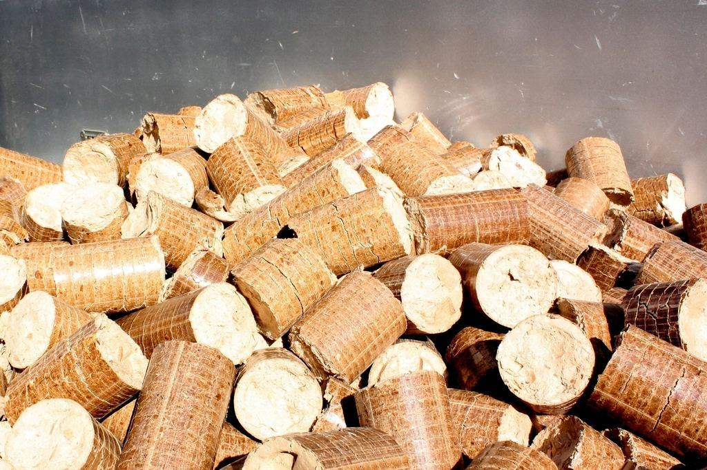

En ren panna eldar mindre flis
Ett sotlager på en millimeter i konvektionsdelen kan sänka verkningsgraden med flera procent. När vi sotar och justerar en gårdspanna sparar gården ofta mer flis än vad besöket kostar. Askan från rena flispannor kan återföras till åkern efter analys.
En ren panna eldar mindre flis
Ett sotlager på en millimeter i konvektionsdelen kan sänka verkningsgraden med flera procent. När vi sotar och justerar en gårdspanna sparar gården ofta mer flis än vad besöket kostar. Askan från rena flispannor kan återföras till åkern efter analys.
- 6 %högre verkningsgrad efter injustering i snitt
- 12gårdar som återför askan till åkern
- 0torkbränder hos avtalskunder sedan 2008

Behöriga för gård och villa
- Kommunala sotningsavtalEntreprenadavtal med Götene, Skara och Grästorps kommuner enligt lagen om skydd mot olyckor.
- SkorstensfejarteknikerFem tekniker med behörighet för brandskyddskontroll enligt MSB:s föreskrifter.
- Heta arbetenHela pannservice och torklaget har certifikat för heta arbeten från Brandskyddsföreningen.
- Kalibrerade mätinstrumentRökgasanalysatorerna kalibreras varje år före eldningssäsongen.

Sotare på landet – med lantbruk i blodet
Har du vuxit upp på en gård eller arbetat som maskinförare? Det är en fördel hos oss. Vi betalar utbildningen till skorstensfejare och du får en egen servicebil.
Under torksäsongen äter vi lunch på gårdarna, och i november har vi kräftskiva i stället för julfest – då har vi äntligen tid.